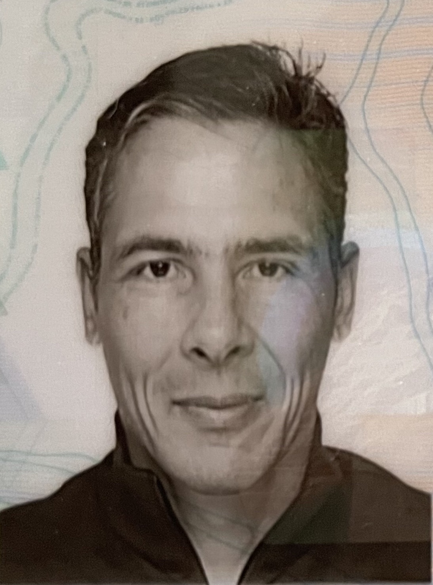

1972.6.22Swiss, I speak FR, EN(B2), DE(B2), ES(B2)
Passionate about well-crafted code, I design software systems that are durable, scalable and maintainable at low cost.
My craft expertise enables me to influence the implementation of modern software engineering practices within technical teams.
My linguistic expertise focuses on the major programming languages and application frameworks, as well as the ability to take on multiple roles.
IT engineer in large and medium-sized companies for almost thirty years. Main activities being software craftsmanship, software development, and software architecture.
Software engineering applied to the modernization of Lombard Odier’s GX wealth management platform.
Software engineering applied to an ambitious unified platform that has to support the whole investment process and be used by investment businesses.
Software engineering applied to a risk engine API used by investment businesses.
Software development, system architecture support, and coaching of internal technical resources, in the context of the redesign of a strategic case management solution using state of the art technologies and practices.
See more information on my personal webpage.